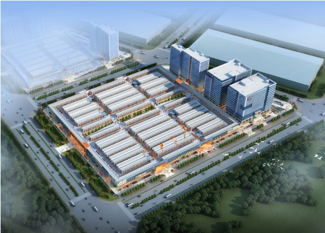
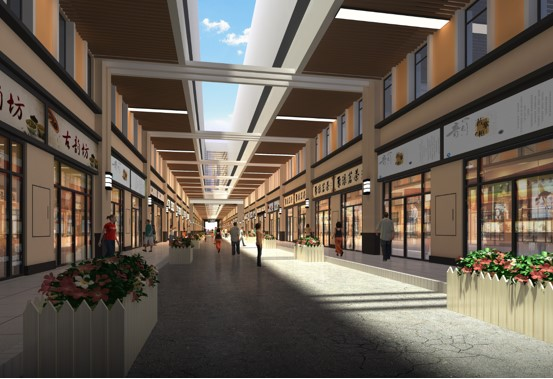

华南城国际茶城，踞于华南城园区西北角，包含茶叶交易中心、茶叶大厦、茶企总部、茶叶商务中心和电商大楼，西靠将军岭路，南临60米宽华南大道，与地铁5号线相交，背依百万人居社区及成熟商业配套。依托华南城的七大核心业务，华南城•国际茶城将致力于打造成安徽首个集茶叶生产加工及研发、茶叶贸易、茗茶展示、茶城配套住宅、茶主题公园、茶文化旅游、茶企总部等于一体，具备国际贸易水平的综合茶城。

作为享誉全国的产茶大省，安徽传承了中国特有的古韵茶文化，从事茶叶生产的茶农、茶企数不胜数。然而由于缺乏远见，目前省内仍无一处规模齐全、享誉内外的茶叶市场，诸如巢湖路茶叶市场、江南茗茶城、安徽茶叶市场、含山路茶叶市场等，商铺少则不足100套，多则不过300套。
反观全国，北京马连道茶叶街区、福建安溪茶叶批发市场、广州芳村南方茶叶市场、上海大宁国际茶城……均是大规模，拥有上千套铺位的茶叶市场。
随着华南城•国际茶城的的出现，一个拥有1800余套商铺体量的超大型茶叶市场亮相合肥，这一创新型突破，将加速集合全国知名茶企进驻安徽，扩大华东茶叶市场经营规模，造就一方旺市。
华南城•国际茶城涵盖国际茶叶交易中心、茶叶大厦、茗茶展示中心、内外贸产业园等，集生产、加工、科研、销售、展览、展示、销售、内外贸、拼配、科技研发、质量品控、茶叶延伸、产品生产基地等于一体。规划建设的产业园生活区、茶文化体验街等多功能配套区域，将为安徽省首席一站式茶城提供完善保障。建成之后的华南城•国际茶城将集茶产品集散及销售中心、茶产业研发中心、茶文化传播及发展中心、茶行业信息推广中心及茶行业标准制定中心等“五大中心”于一体。
合肥华南城将利用自有的成熟物流配送体系，为华南城•国际茶城建立现代流通型茶业体系，打通全国茶叶销售脉络。同时，伴随着腾讯和华南城签订入股合作协议，华南城的在线服务将迅速升级，“实体+网络”的运营模式，将为商户提供更高效、便捷的立体化茶叶商贸服务。
一期茶叶精品交易中心占地20.05万平米，规划建筑面积22万平米，建成以后将成为涵盖红茶、绿茶、乌龙茶等多种茶叶及茶类包装、茶具及茶叶衍生品的精品交易中心。二期内外贸产业园，规划占地超百亩，产业园内包含茶叶及衍生产品的生产、加工、科技研发等区域，建成后将充分利用华南城自有的乾龙物流、会展、电子商务等资源，成为茶叶的内外贸加工、拼配、科技研发、质量品控、茶叶延伸、产品生产基地。